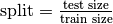

Example 2 : Understanding the hyper-parameter optimization¶
Intuitive explanation on hyper-parameters¶
Hyper-parameters are parameters of a classifier (monoview or multiview) that are task-dependant and have a huge part in the performance of the algorithm for a given task.
The simplest example is the decision tree. One of it’s hyper-parameter is the depth of the tree. The deeper the tree is, the most it will fit on the learning data. However a tree too deep will most likely overfit and won’t have any value on unseen testing data.
This platform proposes a randomized search for optimizing hyperparamter on the given task. In this example, we first will analyze how it works and then how to use it.
Understanding train/test split¶
In order to provide robust results, this platform splits the dataset in a training set, tha will be used by the classifier to optimize their hyper-parameter and learn a relevant model, and a testing set that will take no part in the learning process and serve as unseen data to estimate each model’s generalization capacity.
This split is controlled by the config file’s argument split:. It uses a float to pass the ratio between the size of the testing set and the training set :
. In order to be as fare as possible, this split is made by keeping the ratio btween each class in the training set and in the testing set.
So if a dataset has 100 examples with 60% of them in class A, and 40% of them in class B, using split: 0.2
will generate a training set with 48 examples of class A and 32 examples of class B and a testing set
with 12 examples of class A and 8 examples of class B.
Ths process uses sklearn’s StratifiedShuffleSplit to split the dataset at random while being reproductilbe thanks to the random state.
Understanding hyper-parameter optimization¶
As hyper-paramters are task dependant, there are two ways in the platform to set their value :
- If you know the value (or a set of values), specify them at the end of the config file for each algorithm you want to test, and use
hps_type: Nonein the classifiaction section of the config file. This will set the Hyper Parameter Search to None, and bypass the optimization process to run the algorithm on the specified values. - If you don’t know the value, the platform proposes a random search for hyper-parameter optimization.
Random search¶
The random search is one of the most efficient while fairest method to optimize hyper-parameter. Thus, for each algorithm in the platform, each of its hyper-paramter is provided with distribution of possible values, (for example, the decision tree’s max depth parameter is provided with a uniform distribution between 1 and 300). The random search method will randomly select hyper-parameters within this distribution and evaluate the performance of the classifier with this configuration. It will repeat that process with different randomly selected sets of hyper-parameter and keep the best configuration performance-wise.
In the config file, to enable random search, set the hps_type: line to hps_type: "randomized_search" and to
control the number of draws, use the hps_iter: line.
K-folds cross-validation¶
During the process of optimizing the hyper-parameter, the random serach has to estimate the perofmance of the classifier.
In order to do so, the platform uses k-folds cross-validation. This method consists in splitting the training set in
 equal sub-sets, training the classifier (with the randomly chose hyper-parameters) on
equal sub-sets, training the classifier (with the randomly chose hyper-parameters) on  subsets an
testing it on the last one, evaluating it’s predictive performance.
subsets an
testing it on the last one, evaluating it’s predictive performance.
This learning-and-testing process is repeated times and the estimated performance is the mean of the
performance on each testing set.
In the platform, the training set (the 48 examples of class A and 32 examples of class B from last example) will be divided in k folds for the cross-validation process and the testing set (the 12 examples of class A and 8 examples of class B for last examples) will in no way be involved in the training process of the classifier.
The cross-validation process can be controled with the nb_folds: line of the configuration file in which the number
of folds is specified.
Metric choice¶
This hyper-parameter optimization can be strongly metric-dependant. For example, for an unbalanced dataset, evaluating
the accuracy is not relevant and will not provide a good estimation of the performance of the classifier.
In the platform, it is possible to specify the metric that will be used for the hyper-parameter optimization process
thanks to the metric_princ: line in the configuration file.
Hands-on experience¶
In order to understand the process and it’s usefulness, let’s run some configurations and analyze the results.
This example will focus only on some lines of the configuration file :
split:, controlling the ration of size between the testing set and the training set,hps_type:, controlling the type of hyper-parameter search,hps_iter:, controlling the number of random draws during the hyper-parameter search,nb_folds:, controlling the number of folds in the cross-validation process.
Example 2.1 : No hyper-parameter optimization, impact of split size¶
For this example, we only used a subset of the available classifiers, to reduce the computation time and the complexity of the results.
Each classifier will first be learned on the default hyper-parameters (as in Example 1)
The monoview classifiers that will be used are adaboost and decision_tree, and the multivew classifier is a late fusion majority vote. In order to use only a subset of the available classifiers, three lines in the configuration file are useful :
type:in which one has to specify which type of algorithms are needed, here we usedtype: ["monoview","multiview"],algos_monoview:in which one specifies the names of the monoview algorithms to run, here we used :algos_monoview: ["decision_tree", "adaboost", ]algos_multiview:is the same but with multiview algorithms, here we used : `` algos_multiview: [“majority_voting_fusion”, ]``
In order for the platofrm to understand the names, the user has to give the name of the python module in which the classifier is implemented in the platform.
In the config file, the default values for adaboost’s hyper-parameters are :
adaboost:
n_estimators: [50]
base_estimator: ["DecisionTreeClassifier"]
(see adaboost’s sklearn’s page for more information)
For decision_tree :
decision_tree:
max_depth: [10]
criterion: ["gini"]
splitter: ["best"]
And for the late fusion majority vote :
majority_voting_fusion:
classifier_names: [["decision_tree", "decision_tree", "decision_tree", ]]
classifier_configs:
decision_tree:
max_depth: [1]
criterion: ["gini"]
splitter: ["best"]
(It will build a vote with one decision tree on each view, with the specified configuration for the decision trees)
To run this example,
>>> from multiview_platform.execute import execute
>>> execute("example2.1.1")
The results for accuracy metric are stored in multiview_platform/examples/results/example_2_1/plausible/n_0/started_1560_04_01-12_42__/1560_04_01-12_42_-plausible-No_vs_Yes-accuracy_score.csv
| double_fault_fusion | difficulty_fusion | lasso-ViewNumber1 | sgd-ViewNumber0 | svm_poly-ViewNumber1 | svm_poly-ViewNumber2 | svm_poly-ViewNumber0 | ||
| 0 | 0.5 | 0.5 | 0.5 | 0.5 | 0.7 | 0.7 | 0.65 | |
| 1 | 0.5 | 0.5 | 0.5 | 0.5 | 0.7125 | 0.7125 | 0.8 |
These results were generated learning with 20% of the dataset and testing on 80%.
In the config file called config_example_2_1_1.yml, the line controlling the split ratio is split: 0.8.
Now, if you run :
>>> from multiview_platform.execute import execute
>>> execute("example2.1.2")
You should obtain these scores in multiview_platform/examples/results/example_2_1/plausible/n_0/started_1560_04_01-12_42__/1560_04_01-12_42_-plausible-No_vs_Yes-accuracy_score.csv :
| double_fault_fusion | difficulty_fusion | lasso-ViewNumber1 | sgd-ViewNumber0 | svm_poly-ViewNumber1 | svm_poly-ViewNumber2 | svm_poly-ViewNumber0 | ||
| 0 | 0.5 | 0.5 | 0.5 | 0.5 | 0.7 | 0.7 | 0.65 | |
| 1 | 0.5 | 0.5 | 0.5 | 0.5 | 0.7125 | 0.7125 | 0.8 |
Here we learned on 80% of the dataset and tested on 20%, so the line in the config file has become split: 0.2.
The first difference between these two examples is the time to run the benchmrak, as in the first on more examples are given to learn the algorithms, it is longer. However, the right amount of training examples depends on the available dataset and the task’s complexity.
TODO COMMENT
Conclusion
THe impact of split ratio : dataset related.
Example 2.2 : Usage of hyper-parameter optimization :¶
In the previous example, we have seen that the split ratio has an impact on the computational time. But the most time-consuming task is optimizing the hyper parameters. Up to now, the platform used the hyper-parameters values given in the config file. This happens only if one knows the optimal combination of hyper-parameter for the given task. However, most of the time, they are unknown to the user, and then have to be optimized by the platform.
In this example, we will use the hyper-parameter optimization method implemented in the platform, to do so we will use three lines of the config file :
hps_type:, controlling the type of hyper-parameter search,hps_iter:, controlling the number of random draws during the hyper-parameter search,nb_folds:, controlling the number of folds in the cross-validation process.
So if you run example 2.2.1 with :
>>> from multiview_platform.execute import execute
>>> execute("example2.2.1")
The hps_type argument is set to "randomised_search", which is at the moment the only hyper-parameter optimization method implemented in the platform.
The hps_iter argument is set to 5,
The nb_folds argument is set o 5.
The computing time should be longer than the previous examples. Let’s see the pseudo code of the benchmark, while using the hyper-parameter optimization:
for each monoview classifier:
for each view:
┌
|for each draw (here 5):
| for each fold (here 5):
| learn the classifier on 4 folds and test it on 1
| get the mean performance
|get the best hyper-parameter set
└
learn on the whole training set
and
for each multiview classifier:
┌
|for each draw (here 5):
| for each fold (here 5):
| learn the classifier on 4 folds and test it on 1
| get the mean performance
|get the best hyper-parameter set
└
learn on the whole training set
Longer computing time
Better perf
Importance of difference between Mono and multi
Importance of subset size